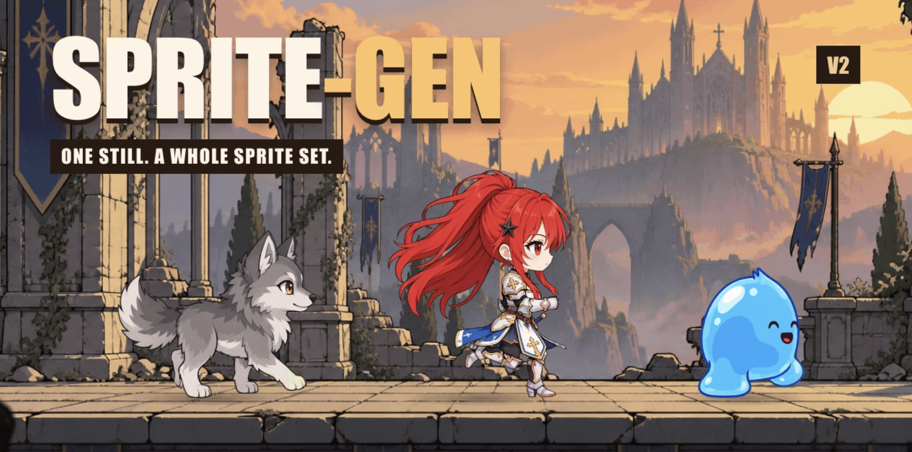

sprite-gen｜從角色圖到透明動畫圖集的 Agent Skill 與輸出限制
sprite-gen｜從角色圖到透明動畫圖集

圖為 yuuna_wz 原帖公開載入的壓縮版本，展示角色與 sprite-gen 標誌；已檢查未見憑證、私人對話或個資。原帖素材的重用授權未確認，公開可見不等於自由再利用。
來源與定位
Threads 作者說這個 sprite 動畫 agent skill 可讓 2D 影格動畫更加流暢；這是作者觀點，不是已驗證的品質比較。作者在[本人續文](https://www.threads.com/@yuuna_wz/post/DfYTl5cmcFb)連到 [DeTools 介紹](https://tools.wingzero.tw/articles/4152)，該文再連至 [sprite-gen GitHub](https://github.com/aldegad/sprite-gen)。下列查核固定於 2026-11-07 的上游 commit `c30322bc6a51a86c26d0d9aadcc2e7db7345027e`；未安裝、執行或測試生成品質。
產出是什麼
- 圖集管線依動作狀態生成及整理影格、色鍵轉透明，輸出 `sprite-sheet-alpha.png` 與 `manifest.json` 的 `frame_layout`：記錄各影格矩形位置、動作 fps 與循環設定。另有 GIF、contact sheet 及可選人工挑選／微調介面。
- 影片管線以靜態角色圖生成影片，擷取透明循環 GIF、WebP 或 strip；另有切圖、去背、調色、陰影及場景合成工具。README 的展示說明使用 Grok Imagine，不能視為本次實測。
- 專案的 [engine-export 文件](https://github.com/aldegad/sprite-gen/blob/c30322bc6a51a86c26d0d9aadcc2e7db7345027e/docs/engine-export.md)特別說明：產出是搭配現有 PNG 的 Aseprite 相容 JSON，供 Phaser／Flame 讀取，並不建立可編輯 `.aseprite` 檔，也不重編碼 PNG；Flame 需使用分狀態 JSON。上游稱僅結構測試，CI 未跑完整 Phaser 或 Flutter 執行環境，循環策略也不會全由匯出檔保留。
- 方向偵測可能錯誤，提示不能保證朝向；鏡像需檢查不對稱細節。走跑循環須實際通過動作 QA，不能將生成結果自動視為可上線素材。
授權、依賴與費用
上游 [LICENSE](https://github.com/aldegad/sprite-gen/blob/c30322bc6a51a86c26d0d9aadcc2e7db7345027e/LICENSE) 與套件設定均標 Apache-2.0；再散布須遵守授權條件，依賴、模型及輸入素材權利另行核對。`pyproject.toml` 標示版本 4.0.0、Python 3.11 以上、Pillow 12.3 至未滿 13、NumPy 2.2.6 至未滿 3；影片流程另需 ffmpeg、img2webp 和 Grok 登入或 xAI API key，RIFE 為可選修復依賴。
開源程式碼不等於生成零成本。README 稱 Codex／Grok 可使用自身訂閱登入，API key 呼叫依供應商計費，OpenAI provider 僅在選用時執行；訂閱額度、服務條款、超額及實際價格應依所選方案確認，未查到統一單價，不保證免費或無限使用。上傳角色圖前確認素材授權與模型服務資料政策；執行 agent skill 前審閱程式、網路傳輸與權限。
參考來源
- [原始分享](https://www.threads.com/share/BATQbYCb7l)／[固定原帖](https://www.threads.com/@yuuna_wz/post/DfYTkHimWKo)
- [作者續文](https://www.threads.com/@yuuna_wz/post/DfYTl5cmcFb)／[DeTools](https://tools.wingzero.tw/articles/4152)
- [固定版 README](https://github.com/aldegad/sprite-gen/blob/c30322bc6a51a86c26d0d9aadcc2e7db7345027e/README.md)／[套件設定](https://github.com/aldegad/sprite-gen/blob/c30322bc6a51a86c26d0d9aadcc2e7db7345027e/pyproject.toml)